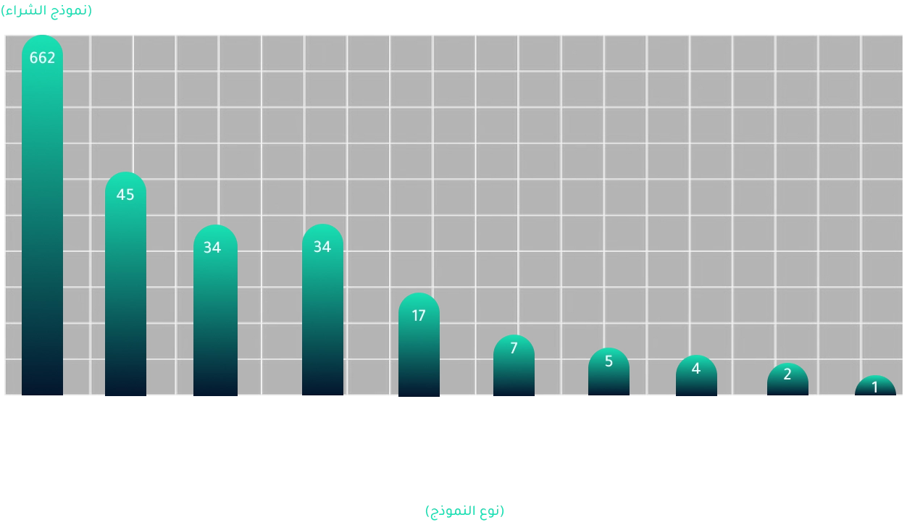

The Big Players
Desalination plants in the Arabian Gulf are owned and operated by various entities, including government agencies,
private companies, and public-private partnerships.
According to the GWI database, around 81% of desalination plants in the Gulf operate under the EPC (Engineering,
Procurement, and Construction) model. In this system, a single contractor is responsible for all engineering,
procurement, and construction activities, while the public sector retains ownership and operation of the facility.
Approximately 4% of plants operate under the BOO (Build-Own-Operate) model, where private entities finance,
construct, own, and operate the facility for a specified period, with no public sector ownership. Another 4% operate
under the IWP (Independent Water Producer) model, where private entities build and operate water treatment or
desalination facilities and sell the water to public utilities under long-term purchase agreements.
The engineering, procurement and construction system controls
81% of desalination plants

According to the GWI database, there are 518 owners of desalination plants in the Arabian Gulf, out of a total of
815 plants. Among them, the Abu Dhabi Water and Electricity Authority (now the Department of Energy) owns
approximately 38 plants, Kuwait’s Ministry of Electricity and Water owns 29 plants, Saudi Arabia’s Saline Water
Conversion Corporation (SWCC) owns 28 plants, Oman’s Ministry of Energy and Water owns 24 plants, the Sharjah
Electricity and Water Authority (SEWA) owns 22 plants, Saudi Aramco owns 21 plants, the Federal Electricity and
Water Authority (FEWA) owns around 20 plants, and the Dubai Electricity and Water Authority (DEWA) owns 19 plants.
Ownership details for nearly 300 plants are not documented in the database.
The database also indicates that 36 desalination plants out of 815 are currently under construction. Additionally,
29 plants are listed as decommissioned, 26 are permanently closed, and 144 are assumed to have ceased operations,
although GWI has not confirmed their status.
Top Companies Dominating Desalination in the Arabian Gulf
National or private oil companies also own 64 desalination plants. Abu Dhabi National Oil Company (ADNOC) owns seven
plants, the Arabian Oil Company owns six desalination plants in the Arabian Gulf, and the Kuwait Oil Company owns
five.
Oil powers the majority of desalination plants in GCC countries. According to earlier reports, Saudi Arabia uses
approximately 300,000 barrels of oil daily for desalination.
On the possibility of using renewable energy for desalination, Dr. Jawad Al-Kharraz, Executive Director of the
Regional Center for Renewable Energy and Energy Efficiency (RCREEE) and former Research Director at the Middle East
Desalination Research Center in Oman, tells Muwatin: “There is a push to transition to solar energy for water
desalination. However, the challenge lies in the massive size of some plants, which require vast areas to generate
the solar power needed for their operation.”